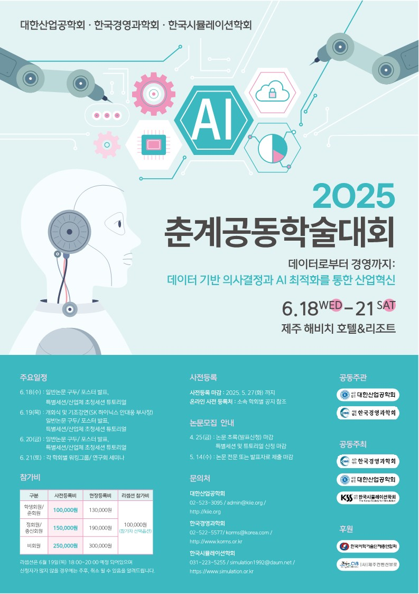

반도체 공정의 웨이퍼 이송장치(OHT) 센서 데이터로 미래 센서값을 예측했습니다. 오차가 가장 낮은 모델이 아니라, 실시간 감시에 맞는 모델을 골랐습니다.

OHT는 시간이 지나면 열화가 생기고, 고장 나면 공정 손실이 큽니다. 열화는 한 시점의 값이 아니라 일정 기간의 패턴으로 드러나기 때문에 시계열 모델이 필요했습니다. 데이터는 AI-Hub 공개 데이터 「제조현장 이송장치의 열화 예지보전 멀티모달 데이터셋」의 온도·전류·미세먼지 센서이며, 상태를 바로 분류하는 대신 미래 시점의 센서값을 예측하는 문제로 잡았습니다.
| 모델 | 평균 MSE | epoch당 시간 | 실시간성 | 판단 |
|---|---|---|---|---|
| TCN (선택) | 0.9879 | 약 1분 | 우수 | 빠르고 구조가 단순해 실시간 적용에 적합 |
| Informer | 0.4470 | 약 14분 | 낮음 | 오차는 가장 낮지만 느리고 복잡 |
| MTAD-GAN | 재구성 기준이라 직접 비교 불가 | 약 10분 | 매우 낮음 | 이상 탐지 모델이라 목적(수치 예측)과 다름 |
오차만 보면 Informer가 가장 좋았지만, 목표는 현장에서 실시간으로 감시하는 것이었습니다. 그래서 정확도 1위가 아닌 TCN을 골랐습니다.
Informer·MTAD-GAN 개발과 평가, 논문 작성은 팀원들과 나눠 진행했습니다.